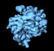
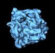

|  | Using Relion with SPIDER data |
 |
According to Sjors Scheres at the MRC Laboratory of Molecular Biology:
RELION (for REgularised LIkelihood OptimisatioN) is a stand-alone computer program for Maximum A Posteriori (MAP) refinement of (multiple) 3D reconstructions or 2D class averages in electron cryo-microscopy (cryo-EM). It is developed in the group of Sjors Scheres at the MRC Laboratory of Molecular Biology. Briefly, the ill-posed problem of 3D-reconstruction is regularised by incorporating prior knowledge: the fact that macromolecular structures are smooth, i.e. they have limited power in the Fourier domain. In the corresponding Bayesian framework, many parameters of a statistical model are learned from the data, which leads to objective and high-quality results without the need for user expertise. the underlying theory of MAP refinement is given in Scheres (2012) JMB. A more detailed description of its implementation is given in Scheres (2012) JSB.
Create/select a low pass filtered reference volume of same size and scaling as your particle data.
Example:| ¤ | mkdir -p relion/input ; cd relion |
Create and access input directory | ¤ | cp myproject/Reconstruction/refvol.dat input |
Get reference volume (one) |
Create/select a group selection file, particle selection file, and particle stacks and place in input directory. Note that particle image files must be square and even-dimensioned.
| input/sel_group | Group selection doc file with group number, number of particles, and group defocus |
| input/sel_particles | Particle selection doc files (one/group) |
| input/data*** | Unaligned particle stacks (one/group) |
| ¤ | cp myproject/Alignment/sel_group.fmr input |
Get group selection doc file (one) |
| ¤ | cp myproject/Alignment/sel_particles_* input |
Get particle selection doc files |
| ¤ | cp myproject/Alignment/data* input |
Get Unaligned particle stacks |
| ¤ | cp myproject/params.* . |
Get microscpy parameters file for reference |
Normalize groups of SPIDER experimental image stacks and create 'star' input file for Relion. The normalized particles will have average density of zero in the background with a standard deviation in the noise of one.
Adjust imageing parameters and filenames in SPIDER procedure: norm_n_star.spi which reads:| sel_group | Group selection doc file with group number, number of particles, and group defocus |
| Alignment/sel_particles | Particle selection doc files (one/group) |
| Alignment/data*** | Unaligned particle stacks (one/group) |
| ¤ | input/relion_[id]_data.star |
Relion star file (one) |
| ¤ | input/data_norm_*** |
Normalized particle stacks (one / group) |
| ¤ | spider spi/fmr @norm_n_star |
Normalize images and create Relion star file |
Run Relion on compute cluster. Refer to SPIDER params.dat file for microscopy imaging parameters. Example:
| ¤ | relion` |
Starts Relion GUI |
| → | |
Run type: |
3D classification |
| → | |
Start new run: |
Yes |
| → | I/O |
Input images: |
input/relion_1_data.star |
| → | I/O |
Output rootname: |
run1/relion |
| → | I/O |
Number of classes: |
4 |
| → | I/O |
Reference map: |
input/refvol.dat |
| → | I/O |
Reference map absolute greyscale: |
No |
| → | I/O |
Symmetry (for ribosome): |
C 1 |
| → | CTF |
Pixel size: |
2.78 |
| → | CTF |
Do CTF-correction: |
Yes |
| → | CTF |
Has reference been CTF-corrected: |
No |
| → | CTF |
Have data been phase flipped: |
No |
| → | CTF |
Ignore CTFs until first peak: |
No |
| → | Optimisation |
Initial low-pass filter A: |
60 |
| → | Optimisation |
Number of iterations: |
25 |
| → | Optimisation |
Regularisation parameter T: |
4 |
| → | Optimisation |
Particle mask diameter: |
320 |
| → | Optimisation |
Mask individual particles with zeros: |
No |
| → | Optimisation |
Reference mask: |
|
| → | Sampling |
Angular sampling interval: |
7.5 |
| → | Sampling |
Offset search range: |
6 |
| → | Sampling |
Offset search step: |
2 |
| → | Sampling |
Perform angular searches: |
No |
| → | Sampling |
Local angular search range: |
|
| → | Running |
Number of MPI procs: |
14 |
| → | Running |
Number of threads: |
8 |
| → | Running |
Submit to queue: |
Yes |
| → | Running |
Queue name: |
/usr8/repository/relion/relion-1.4-gyan/bin/qsub.csh |
| → | Running |
Queue Submit Command: |
qsub |
| → | Running |
Standard submission script: |
/usr8/repository/relion/relion-1.4/bin/qsub.csh |
| → | Running |
Additional arguments: |
|
Run Relion GUI will submit the following command: Executing: csh run1/relion_submit.script &
Convert output files from 'MRC' to SPIDER format.
Use: from_mrc.spi to read:| relion_it###_half+_class*** | MRC class average file |
| ¤ | spi_it###_half+_class***
|
| ¤ | spider spi/mrc @from_mrc |
Create SPIDER format files |
Source: spi2relion.html Page updated: 04/25/16 ArDean Leith
Enquiries: spider@wadsworth.org
{kind=link}
{kind=link}
{kind=link}
{kind=link}